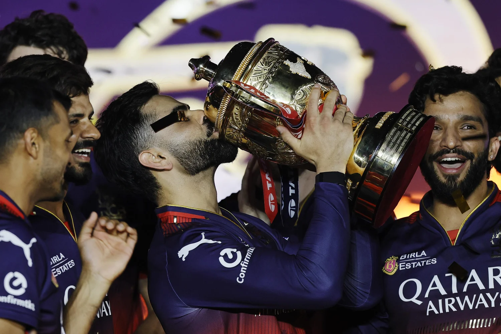
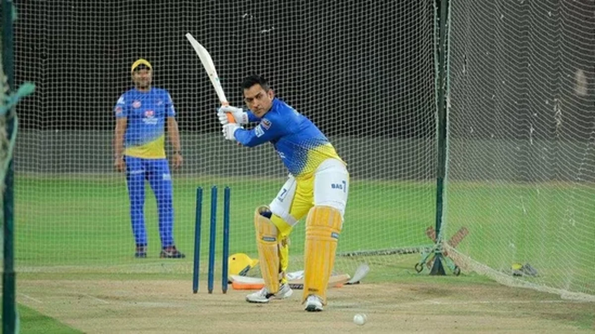

The Number You See Is Not the Number They Get
Every December, when the IPL auction happens, cricket Twitter loses its mind. ₹21 crore for Kohli. ₹18 crore for Pooran. ₹15 crore for that uncapped kid nobody had heard of six months ago. The numbers flash on screen, the commentators gasp, and millions of fans start doing mental maths about how these players are basically printing money.
But here's something that almost never gets talked about: those numbers are a lie.
Not a lie in the fraudulent sense. The contracts are real. The amounts are real. But the idea that a player bought for ₹16 crore walks home with ₹16 crore in his bank account? That's the part nobody bothers to explain. And when you actually break down what happens between the auction paddle going up and the money hitting a player's account, the numbers tell a very different story.
A story that involves the tax department, agents, managers, fitness coaches, nutritionists, physiotherapists, travel expenses, and about half a dozen other hands reaching into that pile before the player gets to touch it.
Let's break it down. Properly.
The Tax Man Takes His Cut First

This is the big one. The part that shaves the most off the top, and the part that most fans either don't think about or actively choose to ignore because it makes the numbers less fun.
When an IPL franchise pays a player, they don't hand over the full amount. They're legally required to deduct Tax Deducted at Source (TDS) before the money even leaves the franchise's account.
For Indian players, that's 10% TDS right off the bat. So your ₹16 crore contract? ₹1.6 crore disappears before you see a single rupee. For foreign players, it's even worse: 20% TDS. That overseas star bought for ₹18 crore? ₹3.6 crore gone immediately.
But here's the thing that makes it even more painful: TDS is just the advance payment. It's not the final tax bill.
IPL earnings are classified as "Income from Business or Profession," not a regular salary. That means the player's IPL money gets added to their total annual income and taxed according to the applicable income tax slab. For anyone earning in the crores, that's the highest bracket: 30%. Add surcharges and cess on top, and the effective tax rate climbs to roughly 34-35%.
Let that sink in. On a ₹16 crore contract, the government takes approximately ₹5.4 to ₹5.6 crore. You haven't bought a car, you haven't paid your agent, you haven't booked a single flight. You've just paid the tax man. And already, more than a third of your "₹16 crore salary" is gone.
Then the Agent Gets Paid
Every serious cricketer in the IPL has a management team. An agent, a manager, sometimes an entire agency handling their contracts, endorsements, media appearances, personal branding, and social media strategy. These people don't work for free.
Agent commissions in Indian cricket typically range between 3% to 10% on playing contracts. The exact percentage depends on the player's stature, the agency, and the scope of services. For a mid-level player with a decent agent, you're looking at roughly 5-8%.
On a ₹16 crore contract, even a modest 5% agent fee means another ₹80 lakh gone. At 10%, that's ₹1.6 crore. And that's just for the IPL contract. If the same agent manages endorsement deals (which usually carry a higher commission of 10-20%), the total management cost across all earnings can be significant.
Nobody begrudges agents their cut. Good management can be the difference between a player earning ₹16 crore and a player going unsold. But it's another slice of the pie that fans never see when they're looking at those auction numbers and thinking: "This guy is set for life."
The Costs Nobody Talks About
This is where it gets interesting, because this is the part that's almost completely invisible to anyone outside the sport.
IPL players aren't salaried employees. They're independent professionals. That means a lot of the infrastructure that keeps them performing at the highest level comes out of their own pocket.
Personal fitness coaches. The franchise provides training during the season, but most serious players maintain a personal fitness coach year-round. That's a monthly salary, sometimes in the lakhs, paid for twelve months even though the IPL only lasts two.
Nutritionists and diet plans. Customised meal plans, supplements, recovery nutrition. Not cheap when you're dealing with sports-grade quality.
Physiotherapy and rehabilitation. Injuries are part of the game. Players often pay for personal physio sessions, rehab programs, and specialised medical consultations outside of what the franchise covers.
Equipment. Bats, gloves, pads, shoes, training gear. The best stuff is expensive, and professional cricketers go through equipment at a rate that would make your wallet cry.
Travel and accommodation. Off-season training stints, personal camps, travelling to and from training facilities. Not everything is covered by the franchise, especially outside the IPL window.
These costs are tax-deductible, which helps reduce the overall tax liability. But they're still real expenses that come directly out of the player's earnings. And for a young player on a ₹1-2 crore contract, these costs can eat a genuinely large percentage of their income.
So What Does a ₹16 Crore Player Actually Take Home?

Let's do the maths on a hypothetical Indian player bought for ₹16 crore at the IPL 2026 auction. This is approximate, but it gives you a realistic picture that's very different from the headline number:
Gross contract: ₹16,00,00,000
Income tax (~34%): -₹5,44,00,000
Agent commission (~7%): -₹1,12,00,000
Personal coaching, fitness, nutrition: -₹40,00,000
Equipment, travel, miscellaneous: -₹15,00,000
Estimated take-home: ~₹8.9 crore
₹8.9 crore from a ₹16 crore contract. That's roughly 55% of the number you saw on TV.
Now, there's a silver lining. Since 2025, the BCCI introduced a match fee of ₹7.5 lakh per game. A player who plays all 14 league matches earns an additional ₹1.05 crore on top of their contract. That helps, but even this is taxable income.
And here's the thing that really puts it in perspective: Virat Kohli was retained for ₹21 crore. Even he, with the highest IPL contract in RCB history, takes home roughly ₹12-13 crore from the IPL alone after all deductions. His endorsement income is a completely separate (and much larger) revenue stream, but purely from cricket? Even the biggest name in the game loses a massive chunk to the system.
Foreign IPL players face an even steeper cut. With 20% TDS and no access to Indian tax deductions, an overseas star bought for ₹18 crore (the maximum allowed since 2026) could see their take-home drop to around ₹10-11 crore. Some countries allow Double Taxation Avoidance Agreements, but the paperwork is famously painful.
The Players at the Bottom
Everything we've discussed so far assumes you're a ₹16 crore player. A star. Someone whose name gets chanted in stadiums and whose face appears on billboard ads during the metro commute.
But the IPL has a base price of ₹30 lakh. And a lot of players, especially young domestic cricketers getting their first shot, are bought at or near that base. ₹30 lakh sounds like a lot of money. And it is, in absolute terms. But run it through the same machine.
Tax takes roughly ₹10 lakh. The agent takes ₹1.5-3 lakh. Personal training and equipment take another few lakhs. Suddenly, that ₹30 lakh contract is closer to ₹15-17 lakh in the hand. For two months of the most intense, high-pressure cricket on the planet.
And here's the part that stings: there's no guarantee you'll be bought again next year. No guarantee you'll play more than a couple of matches. No guarantee the franchise won't release you in six months and move on to the next exciting teenager. That ₹15 lakh might have to last a very, very long time.
This isn't meant to generate sympathy for wealthy athletes. Nobody's asking you to feel sorry for a man earning ₹8.9 crore. But it is meant to challenge the lazy assumption that every cricketer who gets bought at an IPL auction has been handed generational wealth on a silver platter. The reality, as always, is more complicated. And a lot more expensive.
Next time you see ₹16 crore flash on an auction screen, remember: what you see isn't what they get. And the gap between those two numbers is bigger than most people would ever guess.
📷 Image Credits: Images via BCCI/IPL
Frequently Asked Questions
How much tax do IPL players pay?
Indian IPL players have 10% TDS deducted at source, but their final tax liability falls into the highest income tax bracket of 30% plus surcharges and cess. This means an effective tax rate of approximately 34-35% on their IPL earnings. Foreign players face a 20% TDS deduction.
What percentage do IPL player agents take?
Sports agents in India typically charge between 3% to 10% commission on playing contracts, and 10% to 20% on endorsement deals. The exact percentage depends on the player's stature and the scope of services the management agency provides.
Do IPL players get match fees on top of their salary?
Yes. Since 2025, the BCCI introduced a match fee of ₹7.5 lakh per game for all playing members. A player who features in all 14 league matches can earn an additional ₹1.05 crore on top of their contracted auction salary.
How much does Virat Kohli earn from IPL?
Virat Kohli was retained by RCB for ₹21 crore for IPL 2026. However, after approximately 34% income tax, agent commissions, and professional expenses, his actual take-home from IPL alone is estimated to be around ₹12-13 crore. His endorsement earnings are separate and significantly higher.
What is the IPL salary cap for overseas players?
In IPL 2026, the BCCI implemented a salary cap limiting overseas player auction contracts to a maximum of ₹18 crore, regardless of the bidding amount. Foreign players also face a 20% TDS deduction on their Indian earnings.